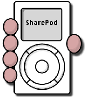
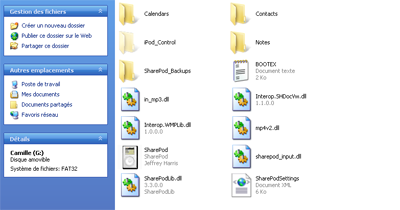
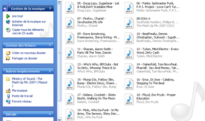
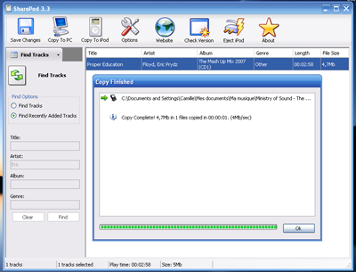
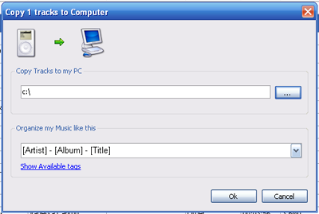
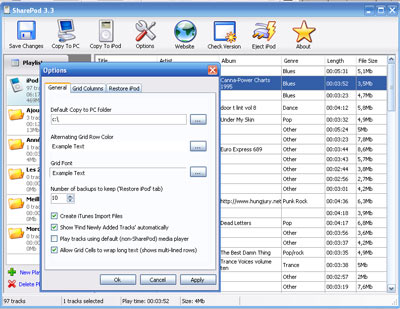
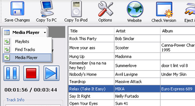

Aujourd'hui, je vais vous faire part de la découverte d'un programme similaire à iTunes, permettant de gérer les musiques de votre iPod, j'ai nommé Sharepod. :)
Sharepod, kesako ? Il s'agit d'un programme Open Source permettant de gérer les musiques de votre iPod sans même installer de logiciel. Si vous ne savez pas ce qu'est un iPod, c'est tout simplement un lecteur MP3 conçu par la firme Apple.
Comme je vous l'ai dit, je vais vous présenter ce fameux logiciel. Vous n'êtes plus fans d'iTunes ? Vous auriez préféré un logiciel plus simple et plus léger ? Eh bien vous êtes sur la bonne page.
Sharepod et les fonctionnalités

En plus d'être simple et léger, Sharepod est gratuit et Open Source ! En fait, le logiciel permet de gérer les fichiers présents sur votre baladeur iPod, et ce, sans même à avoir à installer un logiciel. En effet, il suffit d'extraire le contenu du programme dans votre iPod pour l'utiliser.
Et il n'y a même pas besoin d'installer le logiciel ?
Non, car une fois le programme extrait dans votre iPod, il suffit de lancer l'exécutable se trouvant dans le fichier compressé que vous avez extrait. Grâce à ce procédé, vous aurez de nombreux avantages :
vous n'utilisez pas d'espace disque sur votre ordinateur, étant donné que le logiciel est stocké sur votre iPod ;
où que vous soyez avec votre iPod, vous pourrez utiliser le logiciel et gérer vos fichiers ! Par exemple, si vous allez chez un ami et que celui-ci ne dispose pas d'iTunes (pour copier des musiques), il suffit de lancer Sharepod et de transférer les musiques de votre choix ; intéressant, non ?
Fonctionnalités principales
Voici la liste des fonctionnalités principales de Sharepod (toutes les fonctions ne sont donc pas forcément dans cette liste).
Copie de fichiers sur le iPod
Copie des fichiers du iPod sur l'ordinateur
Lecteur multimédia permettant d'écouter les fichiers présents sur le iPod
Édition des informations des fichiers (auteur, nom du titre...)
Gestion des backups des fichiers du iPod (restauration des fichiers, etc.)
Interface graphique simple et intuitive
Compatibilité avec le iPod Shuffle (depuis la version 3.0)
...Et bien d'autres fonctionnalités !
Téléchargement du logiciel
Vous êtes séduits par le concept et par le logiciel ? Maintenant, si vous souhaitez télécharger le programme, il suffit de se rendre à cette adresse : http://www.getsharepod.com/
Une fois que le téléchargement du logiciel est terminé, il faut décompresser ce dernier. Personnellement, je vous conseille Winrar, vous pourrez décompresser de nombreux formats avec : zip, rar...
C'est fini ? Si oui, vous devriez obtenir quelque chose semblable à cela :

Liste des fichiers et dossiers du iPod, une fois Sharepod décompressé
L'opération de décompression s'est bien déroulée ? On peut alors passer à la suite. :p
Je vais vous expliquer au fur et à mesure comment on utilise le logiciel. Par exemple, j'expliquerai comment transférer une musique sur le iPod, ou même comment changer les paramètres de Sharepod...
Transfert de musiques vers le iPod
Nous y arrivons enfin ! Cette partie sera sans doute courte, je vais vous expliquer comment nous allons transférer une ou plusieurs musiques sur le lecteur multimédia iPod.
Premièrement, nous allons lancer Sharepod, en cliquant sur l'exécutable SharePod.exe. Une fois lancé, vous devriez être sur l'interface, vous devriez voir quelque chose comparable à cela.
Ensuite, nous allons choisir les musiques que nous voulons transférer : il suffit d'aller dans le dossier contenant ces musiques. Pour ma part, je vais transférer la musique 18 (voir image ci-dessous) :

Dossier contenant la musique 18 (que je veux transférer)
C'est bon, vous suivez ? :o Maintenant, pour finir, vous allez faire glisser la musique (ou les musiques, CTRL + clic gauche pour en sélectionner plusieurs) vers la fenêtre de Sharepod, vous devriez obtenir un écran du genre :

Le transfert de la musique s'est bien passé !
Je crois que vous avez compris maintenant, répétez cette opération pour en transférer d'autres. ;)
Copier les musiques sur votre disque dur
Si vous souhaitez copier toutes les musiques présentes sur votre iPod, il suffit de cliquer sur l'onglet Copy to PC (en haut à gauche) et vous verrez apparaître une boîte de dialogue comme celle-là :

Copier les musiques sur votre disque dur
Maintenant que la fenêtre est apparue, choisissez le répertoire où les musiques seront copiées (Copy Tracks to my PC). Le champs au-dessous de celui-là est facultatif, permettant d'organiser les fichiers.
Eh oui, vous ne savez pas encore tout sur ce logiciel. :euh: Dans cette sous-partie, je vais vous présenter l'interface de paramétrage du logiciel.
Onglet Options
Pour modifier les paramètres de Sharepod, il suffit de cliquer sur l'onglet Options, le quatrième onglet en partant de la gauche (avant, il y a Save Changes, Copy To PC, Copy To iPod). Une fois que vous avez cliqué sur celui-ci, vous devriez voir ça :

Aperçu de la fenêtre de paramétrage du logiciel
Pour ceux qui ne comprennent pas grand-chose à l'anglais, je vais vous expliquer la signification de chaque champ de formulaire :
Default Copy To PC folder : dossier par défaut pour la copie des musiques sur l'ordinateur ;
Alternating Grid Row Color : couleur alternative pour les lignes de la grille (des musiques) ;
Grid Font : police d'écriture de la grille ;
Number of backups to keep ('Restaure iPod' tab) : nombre de backups à garder (onglet Restaure iPod).
Media player
Je le disais dans le haut du tuto, Sharepod permet aussi l'écoute des musiques présentes sur le iPod, c'est un media player. Pour y accéder, il suffit de cliquer sur la petite flèche à côté de Playlists, en haut à gauche (juste en dessous de l'onglet Save Changes) :

Écouter les musiques présentes sur votre iPod
Maintenant vous pourrez utiliser Sharepod comme un véritable jukebox. :D
Avant que ce tuto se termine, j'aimerais redonner le site officiel du logiciel (en anglais), pour que vous ne soyez pas perdus. ^^
Ce tuto touche à sa fin, j'espère que vous l'auriez apprécié.
{kind=link}